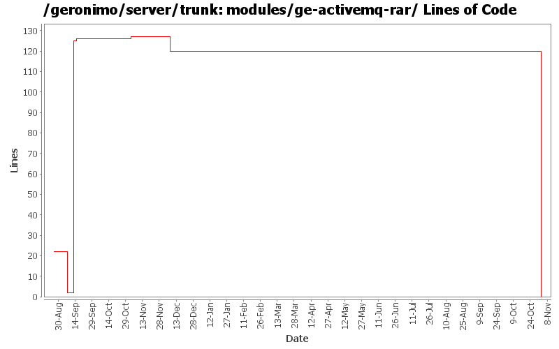

[root]/modules/ge-activemq-rar
 src
(0 files, 0 lines)
src
(0 files, 0 lines)
 main
(0 files, 0 lines)
main
(0 files, 0 lines)
 rar
(0 files, 0 lines)
rar
(0 files, 0 lines)
 META-INF
(0 files, 0 lines)
META-INF
(0 files, 0 lines)
 site
(0 files, 0 lines)
site
(0 files, 0 lines)

| Author | Changes | Lines of Code | Lines per Change |
|---|---|---|---|
| Totals | 13 (100.0%) | 147 (100.0%) | 11.3 |
| jdillon | 4 (30.8%) | 126 (85.7%) | 31.5 |
| djencks | 1 (7.7%) | 11 (7.5%) | 11.0 |
| jlaskowski | 1 (7.7%) | 6 (4.1%) | 6.0 |
| chirino | 1 (7.7%) | 2 (1.4%) | 2.0 |
| dain | 1 (7.7%) | 1 (0.7%) | 1.0 |
| akulshreshtha | 1 (7.7%) | 1 (0.7%) | 1.0 |
| prasad | 2 (15.4%) | 0 (0.0%) | 0.0 |
| kevan | 2 (15.4%) | 0 (0.0%) | 0.0 |
GERONIMO-3565. Modules distributed amongst framework/modules and plugins
0 lines of code changed in 2 files:
GERONIMO-1722 clean up exclusions in pom.xml
11 lines of code changed in 1 file:
GERONIMO-2629 Upgrade to J2EE Management 1.1
1 lines of code changed in 1 file:
GERONIMO-2537 Merge from branches/1.2 onto trunk. I have not reviewed trunk license info. So, it's possible that there are already some deltas which should be reflected in license/notice files. This change updates the general LICENSE.txt and NOTICE.txt files. Note that I've expanded the notice/license files in the root of a source distribution. Also added required copyright to NOTICE.txt files. Note that minimal distributions have an overly broad license/notice files. Also, we have multiple copies of the same general license/notice files. Would be good to reduce these.
0 lines of code changed in 2 files:
Changed version to 2.0-SNAPSHOT
1 lines of code changed in 1 file:
GERONIMO-2537 All Geronimo source files must be brought in line with the new ASF source header and copyright notice policy
Another shot at migrating modules to the new license header
6 lines of code changed in 1 file:
Specify the groupId
1 lines of code changed in 1 file:
(GERONIMO-1722) Exclude dependencies picked up transitivly
125 lines of code changed in 1 file:
Applying patch GERONIMO-2364
2 lines of code changed in 1 file:
(GERONIMO-2162) Use same directory as artifactId for modules/*
0 lines of code changed in 2 files: